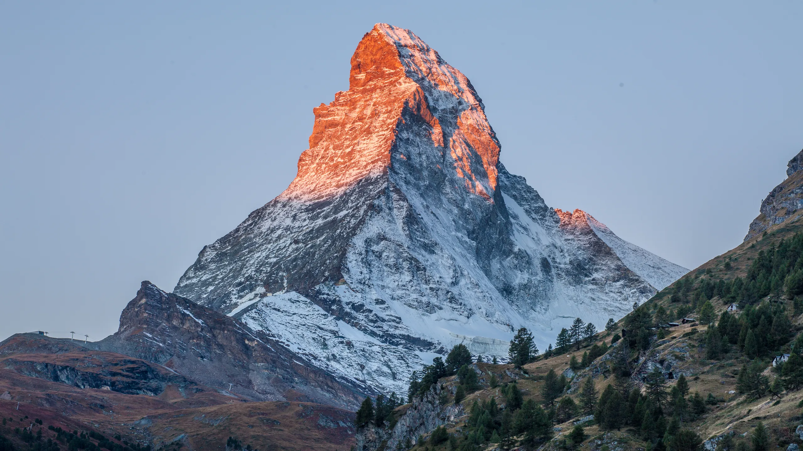

Welcome to Switzerland!
Switzerland is a mountainous Central European country, home to numerous lakes, villages and the high peaks of the Alps. Its cities contain medieval quarters, with landmarks like capital Bern’s Zytglogge clock tower and Lucerne’s wooden chapel bridge. The country is also known for its ski resorts and hiking trails. Banking and finance are key industries, and Swiss watches and chocolate are world renowned.
Famous Tourist Spots

Matterhorn
This pyramid-shaped giant is one of the world's most photographed mountains, which means it's definitely a top place to visit in Switzerland. Standing at an impressive 4,478 meters, thrill-seeking mountaineers from around the globe descend on Switzerland to attempt the summit.